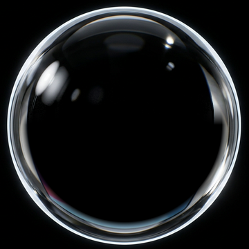
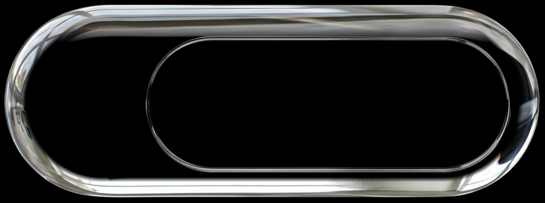

Q3 复盘要点
- 新用户留存 41% → 47%
- 客服工单平均响应 3.2 小时
- 下季度重点：海外支付
- 待定：是否砍掉旧版小程序
状态预览
拖动、点击、长按、右键、拖文件进来、贴到屏幕边缘试试
先设置一个模型吧
设置
模型库
还没有模型
Agents
预算
- 只读搜索、读文件自动允许
- 写入与联网改文件、访问网络首次询问
- 发送、付款、删除每次询问可设总是允许，付款除外每次询问
已总是允许
还没有总是允许的操作
离开电脑时暂停敏感操作回来后再继续等待确认
添加模型
API Key
本地模型可不填 Key
模型名
Key 只保存在本机系统钥匙串，不会上传。
检测到的能力
球的大小
眼睛颜色
跟随系统深浅色系统为深色时，卡片玻璃更深、壁纸稍暗
贴边时自动收起拖到屏幕边缘时贴住并压平
减少动态效果关掉落定晃动、光标视差和漂浮
悬停快捷入口
启用指针停在球上时，旁边弹出几个快捷小泡
出现速度
入口
最多 4 个，按列表顺序排开
多显示器
小球出现在
换屏时跟着鼠标跳到另一块屏幕时，滑过去而不是闪现
原型里只有一块屏幕，这里只演示设置。
Windows 上 ⌥ 显示为 Alt
启用划词工具栏在其他应用里选中文字时，旁边出现快捷操作
出现方式
工具栏按钮
最多 6 个，其余放进「⋯」
不在这些应用里出现
macOS 需要在 系统设置 → 隐私与安全性 → 辅助功能 里允许本应用读取选中文字。
松开后
朗读回复每条新回复读出来（演示）
唤醒词「嘿，小球」开启后麦克风会一直在听，更耗电。只在本机识别唤醒词。
原型里是演示，正式版用系统语音识别或你在「模型」里配置的语音模型。
技能库
⌘Z